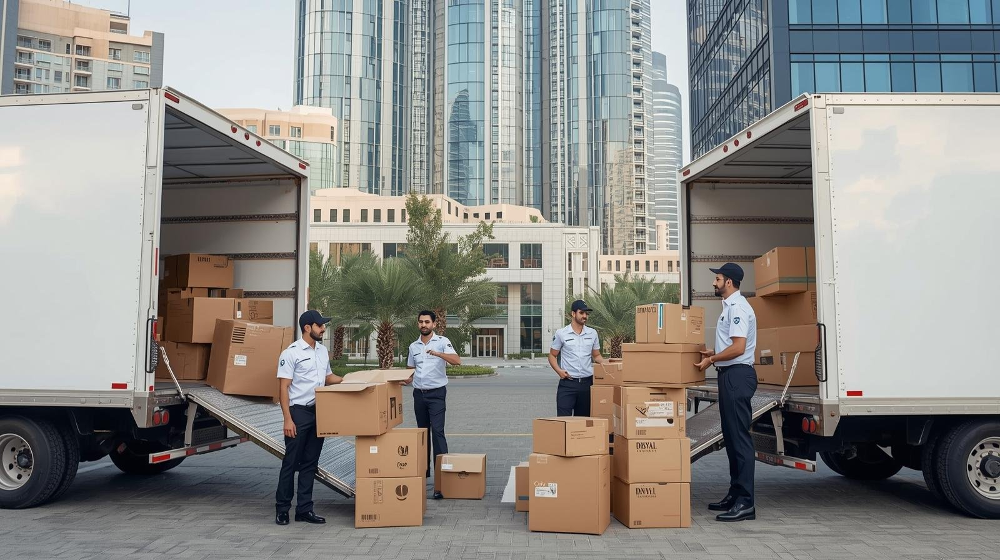
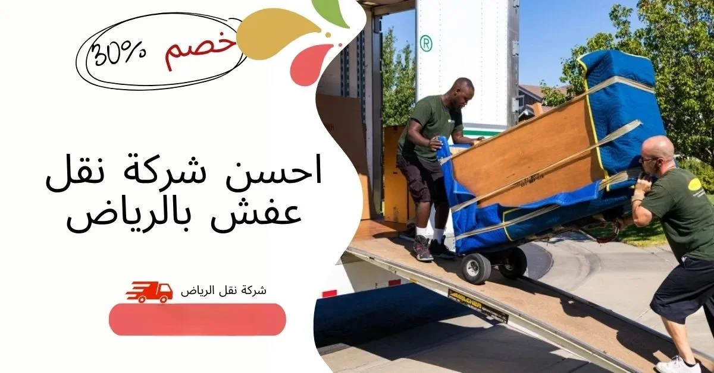

افضل شركة نقل اثاث بالرياض |0559865517

تبحث عن افضل شركة نقل اثاث بالرياض توفر لك السرعة والأمان بأفضل الأسعار؟ لا داعي للقلق بعد الآن، فشركة نقل الرياض تقدم لك حلول متكاملة في نقل الأثاث داخل وخارج الرياض يمكنك الاتصال بها علي رقم 0559865517 مع خدمة فك وتركيب وتغليف احترافية تضمن سلامة ممتلكاتك، بفضل خبرتها الطويلة وفريقها المدرب، استطاعت أن تثبت مكانتها كخيار أول للعائلات والشركات على حد سواء. إذا كنت تفكر في الانتقال إلى منزل جديد أو مكتب عمل، فإن اختيار افضل شركة نقل اثاث بالرياض سيجعل التجربة أكثر راحة وسلاسة، اتصل الآن بشركة نقل الرياض واحجز خدمتك بخطوات سهلة وسريعة.
لماذا تحتاج إلى افضل شركة نقل اثاث بالرياض؟
تحتاج إلى افضل شركة نقل اثاث بالرياض لأن الانتقال من منزل إلى آخر أو من مكتب إلى آخر عملية معقدة قد تسبب الكثير من المتاعب إذا تمت بشكل عشوائي، وجود شركة متخصصة مثل شركة نقل الرياض يضمن لك نقل الأثاث بأعلى درجات الأمان من خلال التغليف الجيد، والفك والتركيب الاحترافي، إضافة إلى توفير سيارات مجهزة لنقل جميع أنواع الأثاث، كما أن الاستعانة بـ افضل شركة نقل اثاث بالرياض توفر عليك الوقت والجهد وتجنبك خسائر التلف أو الخدوش، مما يجعل تجربة النقل أكثر راحة وسهولة مع ضمان وصول ممتلكاتك في أفضل حال، لا تتردد وتواصل الأن مع شركة نقل الرياض من خلال وسائل التواصل المتاحة أمامك.
مميزات نقل الرياض افضل شركة نقل اثاث بالرياض عن غيرها
عندما تفكر في الانتقال إلى منزل جديد أو نقل مكتبك داخل العاصمة، ستدرك أن اختيار افضل شركة نقل اثاث بالرياض ليس رفاهية، بل ضرورة أساسية لحماية ممتلكاتك وتوفير وقتك وجهدك، ومن بين عشرات الشركات العاملة في هذا المجال، تظل شركة نقل الرياض في الصدارة بفضل المميزات التي تقدمها مقارنة بغيرها.
-
خبرة طويلة في مجال النقل
تمتلك شركة نقل الرياض خبرة واسعة في التعامل مع جميع أنواع الأثاث، سواء كان منزليًا أو مكتبيًا، مما يمنح العملاء راحة البال والثقة في أن ممتلكاتهم ستُنقل بأمان تام.
-
فريق عمل مدرب
تعتمد الشركة على فنيين مدربين على أعلى مستوى، قادرة على القيام بمهام الفك والتركيب والتغليف بدقة واحترافية، وهو ما يقلل من فرص حدوث أي خدوش أو تلفيات أثناء عملية النقل.
-
سيارات نقل مجهزة
تتميز الشركة بامتلاكها أسطول حديث من السيارات المجهزة بوسائل تثبيت وحماية، ما يضمن وصول الأثاث إلى وجهته دون تأثر بعوامل الطريق أو الطقس.
-
تغليف احترافي
من أبرز المميزات التي تجعلها افضل شركة نقل اثاث بالرياض استخدام مواد تغليف عالية الجودة مثل النايلون الفقاعي والكرتون المقوى، لحماية الأثاث من الكسر أو الخدوش.
-
أسعار تنافسية وعروض مميزة
توفر الشركة خطط أسعار مرنة تتناسب مع مختلف الميزانيات، مع تقديم عروض وخصومات خاصة لعملائها، وهو ما يجعلها الخيار الأمثل لكل من يبحث عن جودة عالية بتكلفة معقولة.
-
خدمات تخزين متكاملة
لا تقتصر خدمات شركة نقل الرياض على النقل فقط، بل توفر أيضًا حلول تخزين آمنة ومرنة لفترات قصيرة أو طويلة، مما يمنح العملاء مرونة أكبر أثناء الانتقال أو السفر.
-
التزام بالمواعيد
من أكثر ما يميز الشركة عن غيرها هو دقة الالتزام بالمواعيد، حيث يتم تنفيذ عمليات النقل وفق جدول محدد لتوفير الوقت والجهد على العملاء.
-
ضمان وسلامة
توفر الشركة خيارات إضافية مثل التأمين على الأثاث، مما يضمن لك حماية ممتلكاتك من أي مخاطر غير متوقعة أثناء النقل.
خدمات تقدمها افضل شركة نقل اثاث بالرياض للعملاء
تقدم شركة نقل الرياض باقة متكاملة من الخدمات التي تجعلها الخيار الأول لكل من يبحث عن افضل شركة نقل اثاث بالرياض، فهي لا تقتصر على مجرد نقل الأثاث من مكان لآخر، بل توفر حلولاً شاملة تلبي احتياجات العملاء وتضمن لهم راحة البال، ومن أبرز هذه الخدمات:
- فك وتركيب الأثاث
يتولى فريق متخصص مهمة فك قطع الأثاث بدقة، ثم تركيبها مرة أخرى في الموقع الجديد بشكل احترافي. - التغليف الاحترافي
تعتمد الشركة على مواد تغليف عالية الجودة مثل الكراتين المقواة والنايلون الفقاعي لضمان حماية الأثاث من الخدوش أو الكسر أثناء النقل. - سيارات نقل مجهزة
تمتلك شركة نقل الرياض أسطولاً من الشاحنات المجهزة بوسائل حماية حديثة، مما يضمن وصول الأثاث إلى وجهته بأمان وسرعة. - خدمات التخزين
توفر الشركة مستودعات آمنة ومناسبة لتخزين الأثاث لفترات قصيرة أو طويلة مع ضمان حمايته من العوامل الخارجية. - خدمات تغليف ونقل الأجهزة الكهربائية
تمتلك الشركة خبرة كبيرة في التعامل مع الأجهزة الحساسة مثل المكيفات، الثلاجات، والشاشات، حيث يتم فصلها ونقلها بعناية فائقة. - التنظيف بعد النقل
تقدم بعض الباقات المميزة خدمة تنظيف الموقع بعد الانتهاء من النقل، مما يوفر على العميل عناء إضافيًا. - خدمة العملاء والمتابعة
تتميز الشركة بفريق دعم متواجد على مدار 24 ساعة للرد على الاستفسارات وتقديم حلول فورية.
كيف تختار افضل شركة نقل اثاث بالرياض بثقة؟
لا شك أن اختيار افضل شركة نقل اثاث بالرياض يحتاج إلى معايير واضحة تساعدك على اتخاذ القرار بثقة واطمئنان، فالأمر لا يقتصر على مجرد نقل الأثاث، بل يتعلق بالحفاظ على ممتلكاتك وسلامتها طوال عملية النقل، عند البحث، احرص أولاً على التأكد من سمعة الشركة وتقييمات عملائها السابقين، ثم تحقق من خبرة فريق العمل ومدى احترافيته في الفك والتركيب والتغليف، كما يجب أن تعتمد الشركة على سيارات نقل مجهزة تحمي الأثاث من أي ضرر، وأن توفر خدمات إضافية مثل التخزين والتأمين وخيارات الأسعار الواضحة، ومن بين الشركات التي تجمع هذه المميزات، تبرز شركة نقل الرياض باعتبارها الخيار الأمثل لكل من يرغب في خدمة آمنة، سريعة، وموثوقة تجعل تجربة الانتقال أكثر سهولة وراحة، لذلك لا تتردد وتواصل مع الشركة الآن من خلال وسائل التواصل المتاحة أمامك.
خطوات العمل لدى افضل شركة نقل اثاث بالرياض
تعمل افضل شركة نقل اثاث بالرياض وفق خطوات منظمة تضمن للعميل تجربة سلسة وآمنة منذ لحظة التواصل وحتى استلام الأثاث في الموقع الجديد، تبدأ العملية أولاً بتلقي طلب الخدمة والتواصل مع العميل لمعرفة تفاصيل النقل من حيث الموقع، حجم الأثاث، والخدمات المطلوبة.
بعد ذلك، يقوم فريق متخصص بمعاينة الأثاث وتحديد الأدوات ومواد التغليف المناسبة لضمان حمايته أثناء النقل.
تأتي الخطوة التالية وهي فك الأثاث بعناية وتغليفه بمواد عالية الجودة مثل الكراتين والنايلون الفقاعي لتجنب أي خدوش أو تلف.
ثم يتم تحميل الأثاث في سيارات مجهزة ومغلقة تحافظ على سلامته طوال الطريق، عند الوصول، يتولى فريق العمل مهمة تفريغ الأثاث وتركيبه في المكان الجديد بدقة واحترافية. وأخيراً، يتم التأكد من رضا العميل عن الخدمة قبل إتمام العملية، هذه الخطوات المنظمة التي تعتمدها شركة نقل الرياض تجعلها الخيار الأمثل لمن يبحث عن السرعة، الجودة، والأمان في خدمات نقل الأثاث بالرياض.
أسعار افضل شركة نقل اثاث بالرياض حسب نوع الخدمة
تختلف أسعار خدمات افضل شركة نقل اثاث بالرياض تبعًا لنوع الخدمة المطلوبة وحجم الأثاث المراد نقله، فتكلفة النقل تختلف إذا كانت الخدمة تشمل فقط تحميل وتنزيل الأثاث أو تمتد لتشمل التغليف والفك والتركيب، كما يلعب عامل المسافة بين موقع الانطلاق والوجهة دورًا مهمًا في تحديد السعر، إلى جانب ما إذا كان العميل يحتاج إلى خدمات إضافية مثل التخزين أو توفير عمالة إضافية، وتتميز شركة نقل الرياض بأنها تقدم أسعارًا تنافسية تناسب مختلف الاحتياجات مع الحفاظ على مستوى عالٍ من الجودة والاحترافية، مما يجعلها خيارًا مثاليًا للراغبين في الجمع بين السعر المناسب والخدمة الموثوقة.

هل تشمل افضل شركة نقل اثاث بالرياض خدمة التخزين المؤقت؟
نعم، غالبًا ما تشمل خدمات افضل شركة نقل اثاث بالرياض خدمة التخزين المؤقت، وهي ميزة مهمة يحتاجها الكثير من العملاء عند الانتقال من منزل إلى آخر أو عند السفر لفترة طويلة، توفر هذه الخدمة مخازن آمنة ومجهزة بوسائل الحماية من الرطوبة والحرارة والحشرات، مما يضمن الحفاظ على الأثاث بحالته الجيدة طوال فترة التخزين، كما تتميز شركة نقل الرياض بتقديم خيارات تخزين مرنة سواء لفترات قصيرة أو طويلة، مع إمكانية الوصول إلى الأثاث عند الحاجة، هذه الخدمة تمنح العملاء راحة وطمأنينة إضافية، خاصة في حالات تأجيل الاستلام أو عدم جاهزية الموقع الجديد.
الفرق بين الشركات العادية وافضل شركة نقل اثاث بالرياض
يتمثل الفرق بين الشركات العادية و افضل شركة نقل اثاث بالرياض في مستوى الاحترافية والخدمات المقدمة للعملاء، فالشركات العادية غالبًا ما تفتقر إلى التنظيم والخبرة الكافية، وقد لا تستخدم مواد تغليف مناسبة أو سيارات مجهزة بشكل كامل، مما يزيد من احتمالية تعرض الأثاث للتلف أثناء النقل، على الجانب الآخر، تتميز شركة نقل الرياض باعتبارها من أفضل شركات نقل الأثاث في الرياض بوجود فريق مدرب على أعلى مستوى، وخطوات عمل منظمة تشمل الفك، التغليف، النقل، ثم التركيب بدقة، إضافة إلى ذلك، توفر الشركة سيارات مخصصة للنقل، وأدوات حماية حديثة تضمن الحفاظ على الأثاث بحالته الممتازة، هذا الفرق الواضح يجعل الاعتماد على افضل شركة نقل اثاث بالرياض الخيار الأمثل لكل من يبحث عن الأمان، السرعة، والجودة العالية.
كيف تتواصل مع افضل شركة نقل اثاث بالرياض بسهولة؟
للتواصل مع افضل شركة نقل اثاث بالرياض علي رقم 0559865517 أصبح الأمر في غاية السهولة، حيث توفر شركة نقل الرياض عدة وسائل تتيح للعميل اختيار الأنسب له، يمكنك الاتصال الهاتفي المباشر بخدمة العملاء لحجز موعد سريع أو للاستفسار عن تفاصيل الخدمة، كما يمكن التواصل عبر تطبيقات المراسلة المتاحة أمامك لطلب عرض سعر أو تحديد موعد النقل بشكل مرن، إضافة إلى ذلك، تمتلك الشركة حضورًا رقميًا من خلال موقعها الإلكتروني وصفحاتها على وسائل التواصل الاجتماعي، مما يسهل على العملاء متابعة أحدث العروض والخدمات، وبفضل هذه القنوات المتعددة، يستطيع العميل الوصول إلى شركة نقل الرياض في أي وقت والحصول على الدعم الفوري والرد السريع على جميع الاستفسارات.
في الختام، يمكن القول إن الاعتماد على افضل شركة نقل اثاث بالرياض يضمن لك تجربة نقل آمنة وسريعة دون عناء أو قلق
على ممتلكاتك، ومع الخدمات الاحترافية التي تقدمها شركة نقل الرياض من تغليف، فك وتركيب، ونقل منظم باستخدام سيارات
مجهزة وفريق عمل مدرب، تصبح عملية الانتقال أكثر راحة ومرونة، فإذا كنت تبحث عن الجودة والموثوقية في آن واحد، فإن
اختيار شركة نقل الرياض هو القرار الأمثل للحفاظ على أثاثك وضمان وصوله بسلام إلى وجهتك الجديدة، لا تتردد في
التواصل مع الشركة اليوم لتبدأ رحلتك مع خدمة نقل مميزة تلبي جميع توقعاتك.